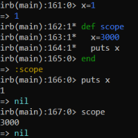
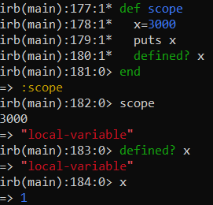

Local Variables
local → visible within a method or block
Statements:
• for, while, if, ... → do not define a new scope. Variables defined inside them are still accessible outside.
•
kernel statements(example: loop) → define a new scope
• methods → define a new scope
In general
these control structures define a new scope:
◇ def … end
◇ class … end
◇ module … end
◇ loop { … }
◇ proc { … }
◇ iterators/method blocks
Verify the scope of a variableTo do that you can use the method “defined?”
